| Menu Funções |
|
Diferenciação
Numérica
Essa função
permite diferenciar numericamente um parâmetro
em função do tempo (ou de outro parâmetro adequado).
Clique no menu “Funções ►
Diferenciação numérica” ou clique no botão 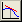
A Caixa de
Diálogo solicitará que o usuário indique os
parâmetros para a operação:
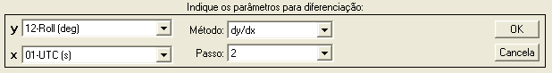
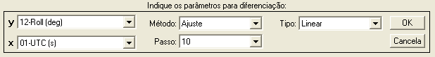
● No campo “y”,
indique o parâmetro que deseja
diferenciar. O gráfico será atualizado conforme a seleção.
● No campo “x”,
indique um parâmetro de tempo (ou
outro parâmetro) adequado para diferenciação (monotônico crescente e
sem pontos
inválidos). Para diferenciar numericamente com espaçamento unitário,
selecione
o parâmetro “No. OBS.”
● No campo
“Método”, indique o método de diferenciação
numérica desejado. As opções são:
|
Opção |
Descrição |
|
dy/dx |
O valor da
diferenciação em cada ponto é dado pela razão entre a variação do
parâmetro y e a variação do parâmetro x em um intervalo definido ao
redor do ponto. |
|
Ajuste |
É realizado um
ajuste de curva em um trecho ao redor de cada ponto, de onde se obtém o
valor da derivada da curva no ponto. |
● No campo
“Passo”, indique a opção desejada para o
intervalo de referência da diferenciação. As opções são:
|
Opção |
Descrição |
|
1 (anterior) |
O intervalo de
referência para a operação é do ponto anterior ao ponto atual (n–1 até
n). |
|
1 (seguinte) |
O intervalo de
referência para a operação é do ponto atual ao ponto seguinte (n até
n+1). |
|
2 |
O intervalo de
referência para a operação é do ponto anterior ao ponto seguinte (n–1
até n+1). |
|
4, 6, 8, 10,
20, 40 |
O intervalo de
referência para a operação vai de metade do passo atrás até metade do
passo à frente do ponto (n–p/2 até n+p/2). |
Obs.: O aumento
do passo tende a suavizar o resultado final.
● Caso o método
selecionado seja ajuste de curva, será
habilitado o campo “Tipo” para indicação do tipo do polinômio de
ajuste. As
opções são:
|
Opção |
Descrição |
|
Linear |
Ajuste do
intervalo com polinômio de 1º grau. |
|
Quadrático |
Ajuste do
intervalo com polinômio de 2º grau. |
|
Cúbico |
Ajuste do
intervalo com polinômio de 3º grau. |
| Nota: A unidade
resultante da diferenciação será compatível com as unidades dos parâmetros de
entrada (por exemplo, deslocamento em metros e
tempo em segundos resulta em velocidade em metros
por segundo). |
Por se tratar
de uma diferenciação numérica de pequenos intervalos,
a presença de ruído no parâmetro y (até mesmo ruído branco de baixa
intensidade), pode resultar em valores incoerentes após a
diferenciação, em
especial no método dy/dx,
distorcendo
consideravelmente o resultado. Para que a diferenciação seja adequada,
o
parâmetro y deve apresentar variações suaves entre os pontos. Caso haja
ruído
no parâmetro a ser diferenciado, é necessário aplicar um filtro para
eliminá-lo.
A figura abaixo
ilustra um parâmetro inadequado
para diferenciação, devido ao ruído presente no sinal:
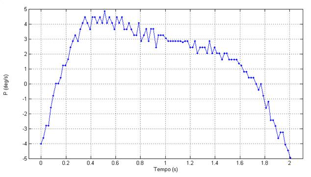
A figura abaixo
apresenta o mesmo parâmetro filtrado,
tornando-o adequado para diferenciação devido à variação suave do sinal:
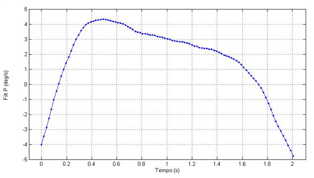
Ao pressionar
“OK”, o R_DAT avisará o usuário e solicitará
que ele confirme o prosseguimento da operação:
| Nota: Certifique-se
que o parâmetro de entrada não contenha ruído, pois a diferenciação de
parâmetros ruidosos fornecerá resultados incoerentes, com ruídos
amplificados. |
Ao pressionar
“Sim”, o R_DAT analisará os
parâmetros “y” e “x”.
- Caso o parâmetro x
não seja adequado, a operação
não poderá ser
realizada.
- Caso o parâmetro y
contenha pontos inválidos (NaN),
o R_DAT interpolará linearmente esses pontos, realizará a operação e reatribuirá NaN aos pontos
correspondentes no parâmetro de saída.
O R_DAT
apresentará temporariamente o resultado no gráfico
principal. Para confirmar, dê um nome adequado ao novo parâmetro na
Caixa de
Diálogo e clique “OK”. Para cancelar e descartar o novo parâmetro,
clique
“Cancela”.

Após definir o
nome e pressionar “OK”, o novo parâmetro será
acrescentado às matrizes de trabalho antes do parâmetro “No.OBS.”.
Lógica de Operação
Caso o método
escolhido para a diferenciação numérica seja dy/dx,
a derivada no ponto será dada pela razão entre a
variação do parâmetro y e a variação do parâmetro x em um intervalo
definido
pelo passo.
Caso o método
escolhido para a diferenciação numérica seja
ajuste de curva, a derivada no ponto será dada pela derivada analítica
da curva
ajustada ao intervalo definido pelo passo.
Os casos são
ilustrados a seguir, considerando o tempo como
parâmetro x:
- dy/dx
com passo 1 e intervalo
anterior:
O valor da
diferenciação no ponto n é dado pela variação
temporal do parâmetro do ponto anterior ao ponto atual (n–1 até n).
O 1° ponto é
calculado pelo método do intervalo seguinte.
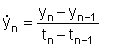
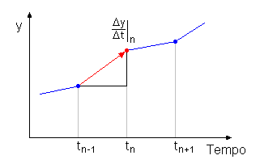
- dy/dx
com passo 1 e intervalo
seguinte:
O valor da
diferenciação no ponto n é dado pela variação
temporal do parâmetro do ponto atual ao ponto seguinte (n até n+1).
O último ponto
é calculado pelo método do intervalo
anterior.
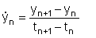
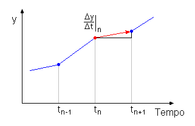
- dy/dx
com passo 2
O valor da
diferenciação no ponto n é dado pela variação
temporal do parâmetro do ponto anterior ao ponto seguinte (n–1 até n+1).
O 1° ponto é
calculado pelo método do intervalo seguinte e o
último ponto é calculado pelo método do intervalo anterior.
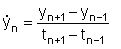
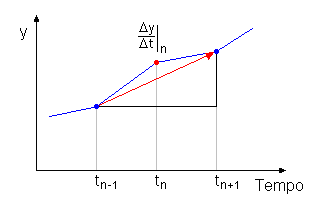
- dy/dx
com passo
maior que 2
O valor da
diferenciação no ponto n é dado pela variação
temporal do parâmetro no intervalo que vai de metade do passo
atrás
até
metade do passo à frente do ponto (n–p/2 até n+p/2).
O intervalo é
truncado nos extremos do parâmetro.
Passo 4:
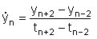
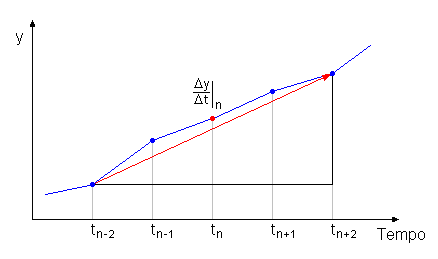
- Ajuste de curva com
passo 1
Estes casos são
iguais ao método dy/dx.
- Ajuste de curva com
passo maior que 1
O valor da
diferenciação no ponto n é dado pela derivada
analítica da curva polinomial ajustada no intervalo que vai de metade
do passo
atrás até metade do passo à frente do ponto (n–p/2 até n+p/2).
Passo 4:
5 pontos
ajustados  coeficientes derivação analítica obtenção da derivada no
ponto.
coeficientes derivação analítica obtenção da derivada no
ponto.
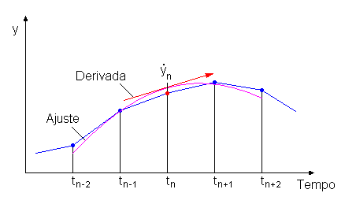
| Nota: Parâmetros
com escala cíclica, como ângulos de Euler,
podem ser incorretamente diferenciados entre observações que apresentam
descontinuidade (por exemplo, proa acima de 360° volta para o início da
escala). Para evitar esse efeito, os parâmetros devem ser alterados
para escala contínua (função “Alterar
intervalo circular”) antes da diferenciação. |
| |
Integração
numérica |
Ajuste
de curva |
|